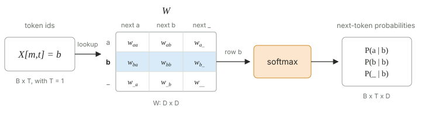
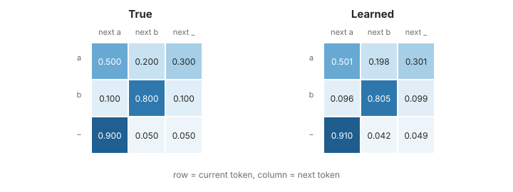

Learning a Bigram Model with Zero Layers
A bigram model looks at one token and predicts the next token.
In Why KV Cache and Not QKV Cache?, I used a 0-layer Transformer before adding attention. Here I make that model smaller: one weight table, \(\W\).
We will generate data from known bigram probabilities. Then we will see if nine learned numbers can recover them.
Make the Data
Our vocabulary has three tokens: a, b, and
_.
The true transition matrix is
\[ \PB_{\text{true}} = \begin{bmatrix} 0.50 & 0.20 & 0.30 \\ 0.10 & 0.80 & 0.10 \\ 0.90 & 0.05 & 0.05 \end{bmatrix}. \]A row is the current token. A column is the next token. For example,
\[ P(x_{t+1}=\texttt{b}\mid x_t=\texttt{a})=0.20. \]import torch
from torch.utils.data import DataLoader, Dataset
import torch.nn as nn
import torch.nn.functional as F
from torch.optim import AdamW
import matplotlib.pyplot as plt
def generate_true_data():
true_bigrams = {
"a": torch.tensor([0.50, 0.20, 0.30]),
"b": torch.tensor([0.10, 0.80, 0.10]),
"_": torch.tensor([0.90, 0.05, 0.05]),
}
vocab = list(true_bigrams.keys())
n_seq = 100_000
full_seq = "a"
all_tokens = [vocab.index(full_seq[-1])]
for _ in range(n_seq):
last_token = full_seq[-1]
sample_arg = torch.multinomial(
input=true_bigrams[last_token],
num_samples=1,
)
sample_id = sample_arg.item()
all_tokens.append(sample_id)
full_seq += vocab[sample_id]
return full_seq, torch.tensor(all_tokens)This makes one long string and 100,000 transitions.
Make the Pairs
The input is one token. The target is the token after it:
\[ \X = [x_0,x_1,\ldots,x_{T-1}], \qquad \Y = [x_1,x_2,\ldots,x_T]. \]class BigramSequence(Dataset):
def __init__(self):
full_seq, all_tokens = generate_true_data()
self.X = all_tokens[:-1]
self.Y = all_tokens[1:]
def __getitem__(self, index):
return self.X[index], self.Y[index]
def __len__(self):
return len(self.X)Zero Layers
The complete model is one embedding table:
class ZeroLayer(nn.Module):
def __init__(self):
super().__init__()
self.W = nn.Embedding(
num_embeddings=3,
embedding_dim=3,
)
def forward(self, x):
return self.W(x)
nn.Embedding is a row lookup. If the current token has id
\(i\), the model returns
These three numbers are logits. Softmax makes them probabilities:
\[ \hat{\ps}_t = \textsf{softmax}(\W_{i,:}). \]There is no hidden layer. There is no attention.
Train
One pass over the data is enough for this example.
model = ZeroLayer()
data = BigramSequence()
loader = DataLoader(data, batch_size=1_500)
optimizer = AdamW(model.parameters(), lr=0.1)
losses = []
for x, y in loader:
optimizer.zero_grad()
logits = model(x) # [batch, 3]
loss = F.cross_entropy(logits, y)
loss.backward()
optimizer.step()
losses.append(loss.item())Cross entropy applies softmax internally. So the model returns raw logits during training.
\[ \mathcal{L} = -\frac{1}{T}\sum_{t=0}^{T-1} \log \hat{P}(x_{t+1}\mid x_t). \]Read the Weights
Apply softmax to each row of \(\W\):
with torch.no_grad():
learned_bigrams = model.W.weight.softmax(dim=1)
print(learned_bigrams)
plt.plot(losses)
plt.xlabel("update")
plt.ylabel("cross entropy")
plt.show()One run gives:
tensor([[0.5012, 0.1975, 0.3013],
[0.0959, 0.8052, 0.0988],
[0.9098, 0.0416, 0.0486]])